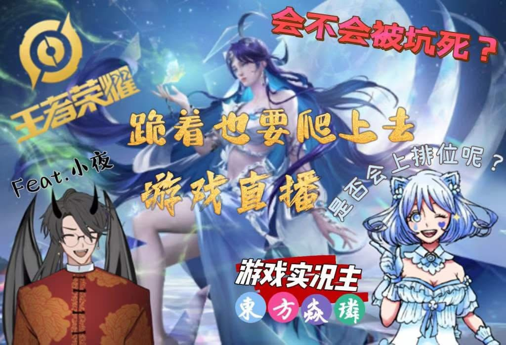
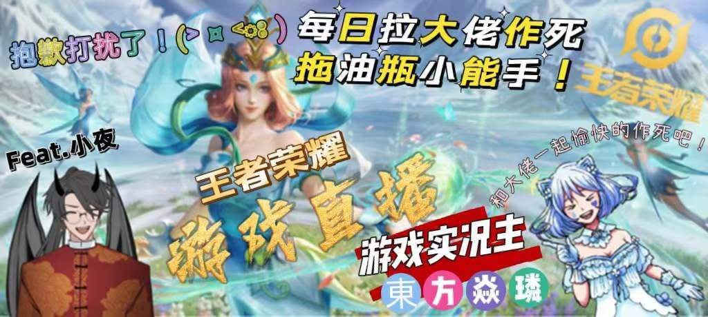
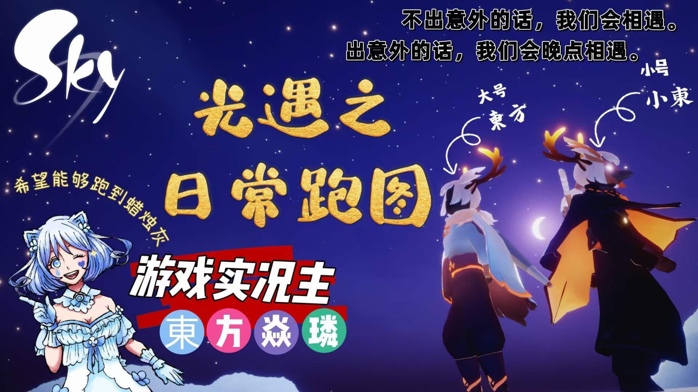
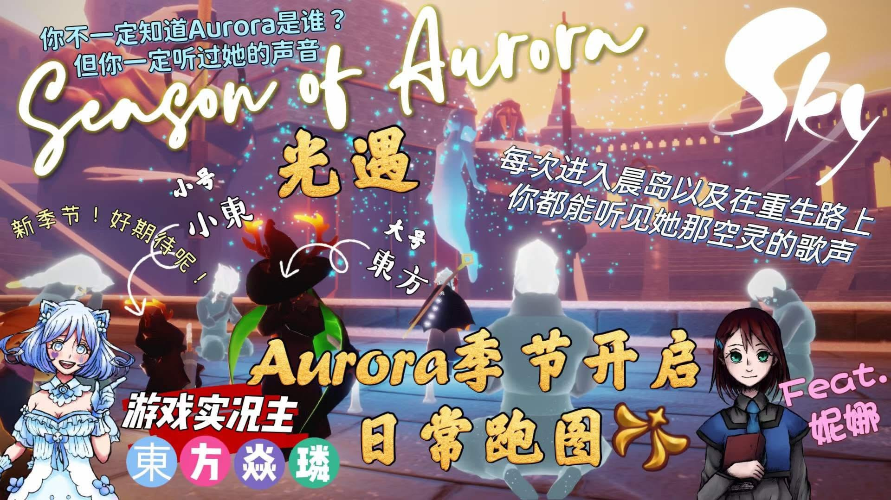
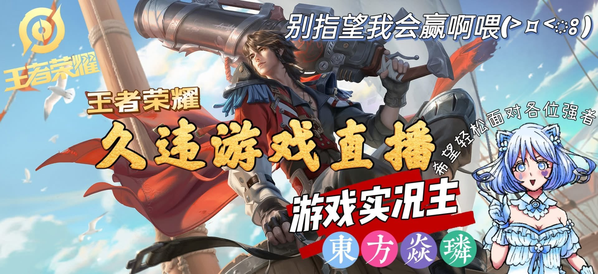
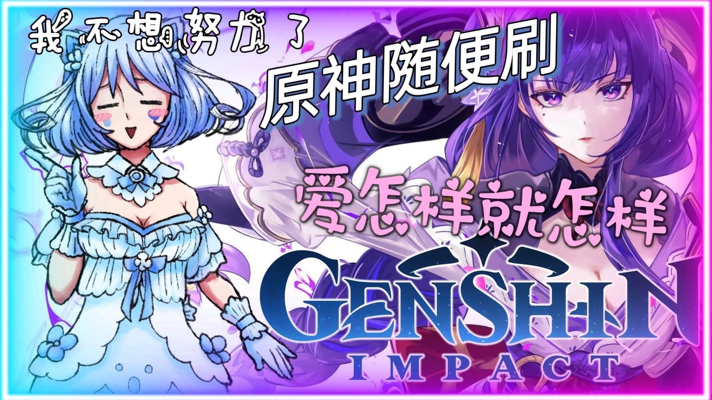
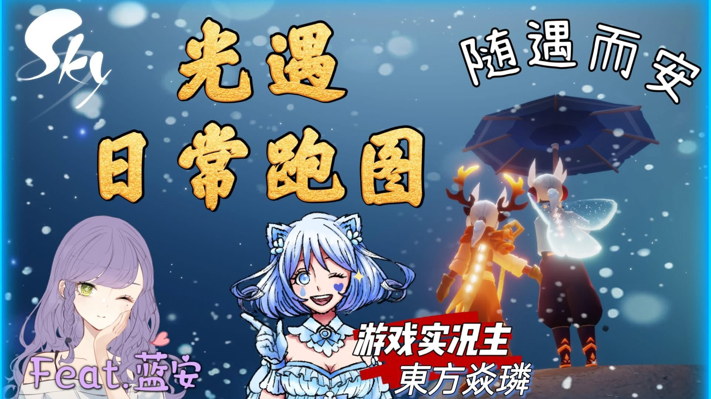
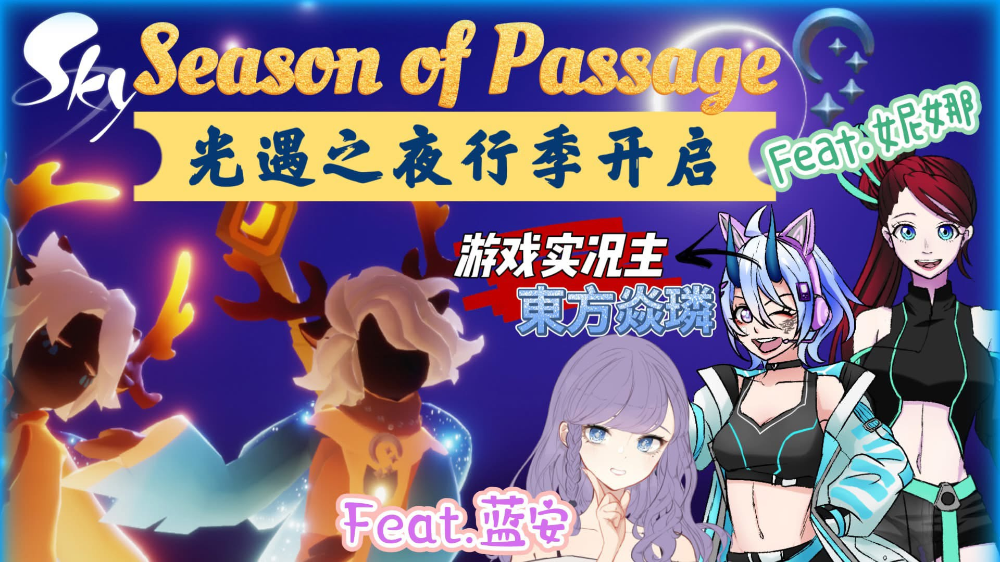
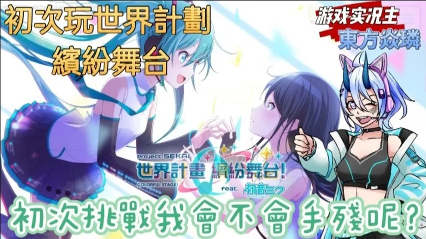

💙 About Me
Origin:
東界
Signature color:
Blue 💙
Streaming schedule:
MYT (UTC+8), usually in the evenings when I'm free.
Surprise streams happen!
What I do:
Independent artist / YouTube & Twitch streamer / purveyor of useless trivia
Personality:
🎨 Languages & Talents
Languages:
• Fluent:
Mandarin Chinese
• A little:
Hokkien / Taiwanese, Malay, English, Malaysian Hakka, Japanese, Cantonese
Hobbies:
🎮 Streaming Game Library
Honor of Kings (Global)
V9 spender; comfortable in every lane except jungle.
Pokémon TCG Pocket (Global)
An average player with an unreasonable obsession with card rarity.
Goddess of Victory: NIKKE (playing casually)
A casual player with a soft spot for the game's busty characters.
Puella Magi Madoka Magica: Magia Exedra (Taiwan server)
All game stories, including side stories, cleared up to Nightmare difficulty.
Sky: Children of the Light (Global, retired)
All permanent constellations completed; started near the end of Season of Assembly.
Genshin Impact (Global, retired)
Map explored through Fontaine; a laid-back open-world explorer.
Arena of Valor (retired)
Casual all-rounder, except in the jungle.
Hatsune Miku: Colorful Stage! (Taiwan, retired)
A Hard-difficulty-only disaster.
Eggy Party (Asia, retired)
A reliably casual party-game player.
🖼️ Past YouTube Livestream Thumbnail Designs









🔗 Official Social Platforms
🎬 Content & AI Use Policy
VTuber Character & Copyright
Copyright and related rights in Dong Fang Yan Lin’s VTuber character, character settings and design, name, logo, marks, official visual materials, and related creative works belong to or are lawfully held by Dong Fang Yan Lin and the team. These guidelines are here to help everyone create with confidence; please get in touch for permission before any commercial use.
Non-Commercial Fan Works
I’m always happy to see non-commercial fan creations, such as fan art, videos, and other creative works. When sharing, please mention that your work is unofficial. Once it’s finished, feel free to send it through my official social channels—I’d love to see what you’ve made!
Monetization & Commercial Collaboration
If you’re thinking about selling a work or merchandise, earning money from a creation, or exploring a commercial collaboration, please contact me through my official social channels and get my consent first. We can work out the details together.
Video Clips
You’re welcome to make and share clips from my livestreams and videos. Please keep the original meaning and context, and avoid malicious edits, taking remarks out of context, or distorting what I said. Please don’t use clips to harass, defame, mislead, or impersonate me. If you plan to monetize a clip or use it commercially, please ask for my consent first.
Generative AI
Non-commercial fan works made with generative AI are welcome, and I’d love to see finished pieces shared through my official social channels. To help protect my work and avoid misunderstandings, please keep these points in mind:
- Please don’t use my images, videos, voice, or other materials to train or fine-tune AI systems, or to create datasets.
- Please don’t imitate my voice or impersonate me. When sharing AI creations, make it clear that they’re fan-made so people don’t mistake them for work I created, posted, or authorized.
- If an AI creation will be monetized or used in a commercial collaboration, please get in touch and receive my consent first. We can discuss the details together.
Thank you for supporting my work and being thoughtful about these guidelines! If you’re unsure whether a particular use is okay, or spot something that may not be authorized, feel free to message me through my official social channels with a link or screenshot and we can talk it through.
These guidelines and all future revisions are owned by Dong Fang Yan Lin and the team.
💬 Livestream Chat Rules
We hope everyone can chat comfortably and have a good time. Before joining the chat, please keep these friendly reminders in mind:
- Please be kind and respectful to one another and keep things harmonious. Personal attacks, insults, harassment, and discrimination are not allowed.
- Please avoid spamming, endlessly repeating messages, flooding the chat with emotes, or unauthorized promotions. Depending on the situation, moderators may issue a reminder, mute you, or remove you from the chat. Let’s work together to make the chat comfortable for everyone.
- Please respect my privacy and that of other viewers. Don’t share personal information, addresses, or similar details, and don’t pry excessively into private or undisclosed matters.
- Subtle or mildly explicit sexual jokes are okay in moderation. Please keep political and religious topics brief and respectful so they don’t derail the chat or cause unnecessary arguments.
- Please don’t bring up specific VTubers or controversial, real-life, or inappropriate figures in the chat. Don’t defame anyone, spread rumors, or share unverified claims.
- Unless I’m already discussing the topic, please avoid excessive spoilers, backseat gaming, or unrelated topics.
- If a moderator begins issuing reminders or managing the chat, please follow their guidance. If you have any questions, please message a moderator privately and respectfully.
Thank you for helping keep the chat friendly. Let’s enjoy the stream together!